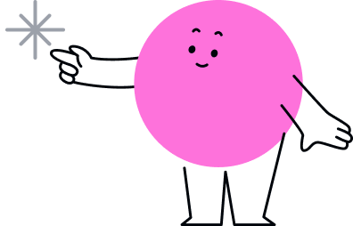

인성요인 분석

홍길동님!
홍길동님은 계획성 글로벌 역량이 가장 우수한 역량 항목이에요!
성실책임감은 주어진 과업을 끝까지 완수하며 규범을 준수하려는 태도입니다.
창의성은 기존 방식에 얽매이지 않고 새로운 대안을 모색하려는 능력입니다.
홍길동님은 책임감이 매우 강하며 조직의 신뢰를 받는 안정적인 실무형 인재입니다.
반면, 조직이해 자기계발 역량이 상대적으로 낮은 편이에요. 조직이해는 혁신적인 아이디어를 제안하며 문제해결에 있어 유연한 사고를 발휘합니다.
혁신적인 아이디어를 제안하며 문제해결에 있어 유연한 사고를 발휘합니다.
응답 신뢰도 주의
응답 신뢰도는 인성 검사의 신뢰성을 판단합니다.
응답 일관성은 검사를 받을 때 집중해서 성실하게 응답한 정도를 나타냅니다. 비전형 응답자수와 응답 성실도를 포함하여 응답 일관성 점수가 주의영역에 위치하고 있을 경우, 성실하고 일관되게 답변을 하였는지 유심히 관찰할 필요가 있습니다. 사회적 바람직성은 자신의 성격을 타인이나 조직에게 사회적으로 바람직하게 보이려고 하는 정도를 의미합니다.
이 신뢰도가 주의일 경우 타인에게 보기 좋게 보이도록 자신의 성격을 과장하였을 가능성이 있습니다.
응답 일관성
적합
검사 신뢰도
적합
주의
사회적 바람직성
주의
검사 신뢰도
적합
주의
공감능력 분석
평균
낮음
높음
설명
공감 능력 분석 결과를 제시합니다.
이러한 분석은 특정 감정을 공감하거나 이해할 수 있는 지를 나타내는 것으로 응시자의 공감능력을 평가할 수 있습니다.
주의에 해당될 경우 일반적인 직무에서는 문제되지 않지만
대인관계를 요구하는 직무에 있어서는 PI결과를 심도있게 분석할 필요가 있습니다.